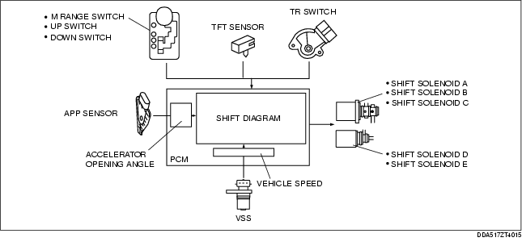

SHIFT CONTROL STRUCTURE (SPORT AT) [FN4A-EL]
id0517a11063a7
Features
• An automatic shift system in the D range and a manual shift system have been adopted for the AT system. The automatic shift system, with automatic shifting between 1GR and 4GR. The manual shift system allows option gear position selection by manually operating the selector lever forward and back.
• In the D range, automatic shifting occurs between 1GR and 4GR. Moreover, in the M range, the specialized AT manual mode shift control is available.
-
- Shifting is controlled by the PCM which, based on range/position determination, selects and determines the shift diagram. In the D range the automatic shift diagram is followed and in the M range the manual mode shift diagram is followed.
• The TCC is engaged in D range, 4GR.
• The selector lever indicator light and the gear position indicator light are built into the instrument cluster.
Structure
System diagram
